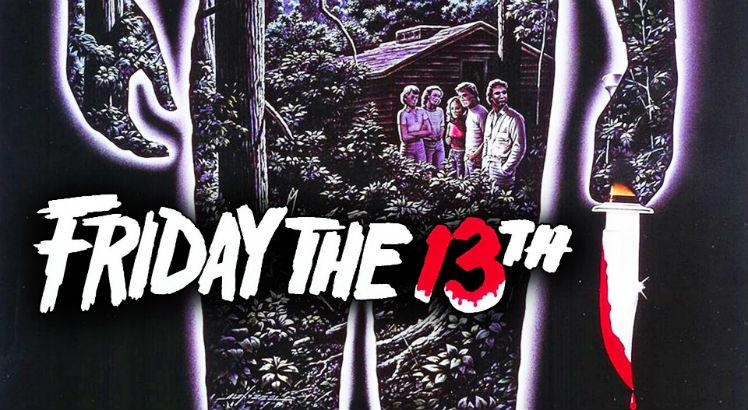

-
Sexta-Feira 13, filme de 1980
Para os amantes do terror clássico, "Sexta-Feira 13" (1980) é um filme imperdível. Este ícone do gênero slasher marcou a década de 80 e continua a ser um favorito dos fãs. A história se passa no acampamento Crystal Lake, que está prestes a reabrir após anos de fechamento devido a uma série de eventos trágicos. Um grupo de jovens monitores chega ao local para prepará-lo para a temporada de verão, mas logo se vê perseguido por um assassino implacável. Você pode assisti-lo nas plataformas:
-
It: A Coisa
"It: A Coisa" é um filme de terror lançado em 2017, dirigido por Andy Muschietti e baseado no romance de Stephen King. A história se passa na cidade fictícia de Derry, onde crianças começam a desaparecer misteriosamente. O filme é elogiado pela atmosfera assustadora e pela atuação convincente do elenco jovem.

-
Pânico
A trilogia "Pânico", dirigida por Wes Craven, é uma das mais icônicas do gênero de terror. A série é conhecida por sua abordagem metalinguística, combinando elementos de terror e comédia. O primeiro filme se passa na pequena cidade fictícia de Woodsboro e começa com a brutal morte de uma adolescente, dando início a uma série de ataques cometidos por um assassino mascarado, conhecido como Ghostface.